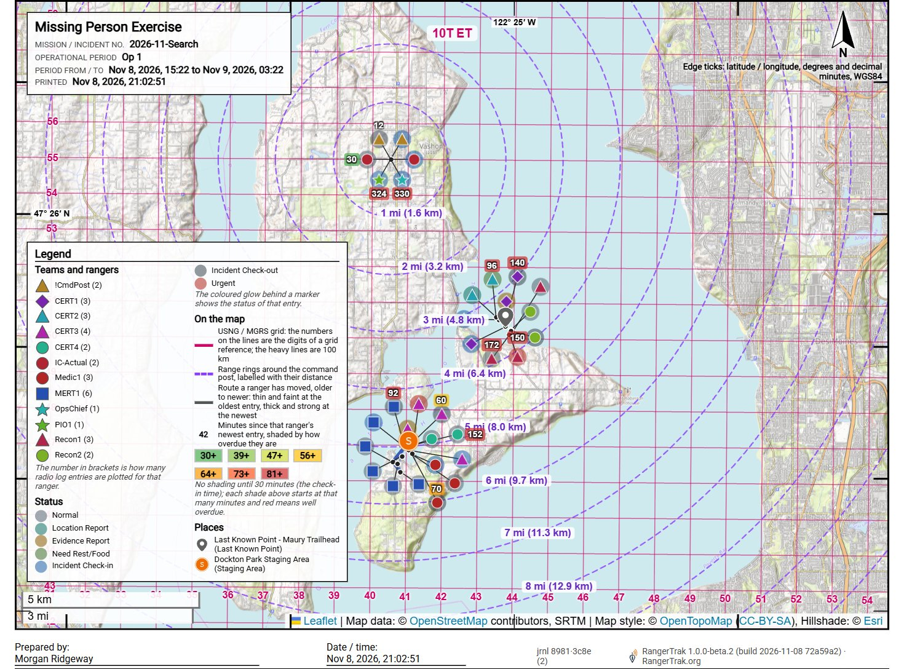

Full menus: the extras
Everything beyond the everyday workflow. Start with What it does; come here when your group wants more. It’s the same free app with more on screen.
Easy menus and Full menus
A new install of RangerTrak opens in Easy menus: the controls a scribe needs to log reports, watch the map and print the Form 309 Communications Log, and nothing else. Starting out, that’s all you need. Full menus adds everything on this page.
Switch any time with the Full menus button at the top of Entry, Map, Mission or Rangers & Teams, the pages that have extras. Its outline and dot turn plum when Full menus is on and stay gray when it’s off. In Full menus, each extra has a thin plum edge down its left side, like the cards below, so you can always tell the everyday controls from the extras. The choice is per device: the command-post laptop can show everything while a newcomer’s phone stays simple. A coordinator’s Setup file can suggest Easy or Full menus for the phones they prepare; the person’s own choice wins after that.
Easy menus never hides your data. An extra stays on screen whenever the mission is using it: set up a tactical call sign or attach a photo, and it shows in both views. Switching changes nothing and deletes nothing. Warnings, the readiness dot, backup and storage protection show in both. And every extra is free, like the rest of RangerTrak: Full menus is not a paid tier.
The extras
Before the mission
Setup files
A coordinator can bundle the roster (with photos), named places and mission settings into one file and hand it to the scribe, from the Setup file card on the Mission page. Loading one merges into what’s already there, so a rangers-only file and a places-only file can both be loaded. Loaded the wrong one? Undo last import (Mission > Data safety) puts things back the way they were, for 24 hours.
Layers
Places load from a spreadsheet, a Google My Maps export or a GeoJSON file, on the Map page. Give an import a name, such as “Fernhollow CERT” or “Shelters”, and RangerTrak remembers it as a layer: load a newer copy later and it asks whether to remove anyone who is no longer on it. Layers can be exported and printed from Rangers & Teams.
Statuses and places
Status names and colors are yours to edit, and they become the buttons on the entry screen and the colors on the map. Named places, such as the command post or a staging area, show on both maps, sorted into categories you can edit too.
Logging a report
Tactical calls, from and to
List the mission’s tactical call signs on the Mission page, such as Command Post or Rim Team 1, and say who is operating each. On the entry screen, From and To station take a tactical call or a ranger. The Radio Log and the printed 309 show both ends the same way, such as “Rim Team 1 (K7ABC)”.
Every location format
Decimal degrees, degrees and decimal minutes, degrees-minutes-seconds, USNG/MGRS and UTM: the same five, in the same order, on the entry screen, the map and places. Full menus puts a picker on the entry screen, so a report can be typed in whatever format it was read out in; the Mission page sets the one it starts on. A Maidenhead grid locator or a Plus Code goes in the address box, and works offline.
Photos, video and audio
Attach adds files to a report; on a phone it can open the camera. The original is kept exactly as it came, with a fingerprint that shows a copy is identical. For a big file there’s Smaller copy: much quicker to send, but without fine detail. Hover a report’s 📎 to peek at its pictures.
Evidence or a clue
Alt+click the small map on the entry screen to mark evidence or a clue at a second spot, apart from where the team is standing.
ICS-213 messages
Tick “Also generate an ICS-213” on a report and it becomes a message on the Messages page, printed or saved as a PDF on FEMA’s own form, with the reply section left blank for the recipient. Keep a list of the usual recipients, and turn on auto-print to print every 213 the moment you submit it.
ICS-213RR resource requests
Tick “Also generate an ICS-213RR” to ask Logistics for supplies: up to nine items (quantity, kind, description, type, needed by), a priority, where to deliver it and the on-site contact. It prints from the Messages page on FEMA’s form, leaving the Logistics and Finance parts blank, with our message number in the margins. Field phones never show it.


Maps
The alternative map
A second map that also works offline. It has a low-detail world map built in; demo missions bring street detail for their own area, and for yours you can load a map file.
Map layers
On the topographic map, the layers box (top right) adds a USNG / MGRS grid, working offline, plus a satellite view, marked hiking trails and terrain shading when you’re online. Under the map, the Show on map box adds range rings around the command post and a heat map.
A printed map sheet
Print map gives a finished landscape map sheet for the packet with your 309 and 213s: a title box with the mission, operational period and printed time; the map filling the page, with a north arrow, scale bar, map credit and latitude/longitude marks round the edge; and a “Prepared by” line. The legend floats on the map where it hides no markers, and doubles as a roll call: every team and ranger on the map with how many entries each has, plus the statuses, overdue shading and places. On a crowded map it moves to a second page, and a filtered map says “Filtered” in its title box. Every report prints as its own marker, so a PDF can be zoomed. The button takes a few seconds to fetch a more detailed map for paper (offline it uses your saved area), so use it rather than the browser’s own Print.
Protecting the data
Device encryption
The roster, reports, notes, photos and attached files can be locked on the device behind a passphrase that the app asks for each time it opens. It protects a lost or stolen device, not an unlocked one, and a forgotten passphrase can’t be recovered.
After the mission
ICS-214 activity log
The same AAR/214 button at the top of every page also takes an ICS-214 line: what you did and when, with a time you can change. The After Action page collects them, and Export ICS-214 fills in FEMA’s own fillable 214, offline: your name, ICS position and home agency, up to eight Resources Assigned, and the lines for this operational period or all of them. 214 lines are your own unit log, not radio traffic, so they never show on the 309, the map or the summary. They are in the mission backup, but not in Report Packets or hand-overs: each device keeps its own 214. In Easy menus, After Action joins the menu once there is a 214 line.
Each of these is explained in the in-app Help, which always matches the app. Phones, several scribes and big screens are on More than one device.